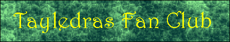

TAYLEDRAS FAN FICTION
Counting Ribs
Stardark
A poem set to music
The Tayledras Home Page
The Tayledras language
Information about the Tayledras
The Origins of the Tayledras
Thanks for visiting. Zhai'helleva!